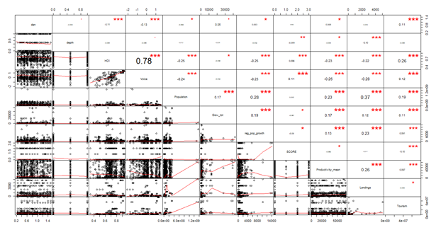

Bright Spot Analysis
This project was completed as part of my MSc degree at The University of Leeds. Over the 2019-2020 year I developed the worlds largest database of coral reef marine invertebrates. You can find the code for the project HERE

It uses Bayesian Hierarchical Moddeling to find outliers amongst the world's coral reefs. These locations are ones that defy the norm of their region or country and are doing better than you would expect. This was specifically a review of Invertebrates and how the densities of invertebrates could differ from region to region, even when considering the scale and multitude of socioeconomic and environmental factors that play into invet densities.
#1. The Database
The world’s largest density database of coral reef marine invertebrates was developed by the author to carry out this analysis. The database is comprised of density data from 28 international contributors. These sources included NGO’s, Governments, Academics, and research networks. The database holds 200,165 rows of data covering over 20,000 unique geographic sites. These sites are spread across 135 different countries along a 20-year period. 83 different species were identified within the database.
Invertebrate density was the independent variable used to reflect reef success. The core criteria for data to be included in the database was that the data was collected using transect survey methodology. These surveys varied in length, width, and number of replicates. Density values were calculated as density per 100m2. Density values were logged prior to analysis to conform to a normal distribution.
Scales: The model and variables operate on one of two primary geographic scales.
1. Reef Cluster: A grouping of survey locations within a given region. Sites were grouped with other sites that were within 5km from one another, as this is the typical range of artisanal and recreational fishing practices on a coral reef (Begossi, 2006). Points were cluster using R’s geosphere and tidyverse packages (Wickham, 2017). The distm function was used to generate a geodesic distance matrix in meters. The hclust function was used (method= “Complete”), to cluster sites through a hierarchical approach. The centroid was then calculated for visual purposes and as an anchor point for future variable creation.
2. Country: The larger scale of the variables and model was country. Clusters were assigned countries and country codes. Many site’s countries were provided by the original data providers, but those that had not received a country were assigned one based on the nearest country to the cluster’s centroid.
#2. The Analysis

Variables needed to be independently built and assembled. Above is the correlation plots of those variables to check for multicollinearity. An example variable would be Invertebrate Landings: The total amount of recorded invertebrate catch removed from a coastline by a country within a year. Data was provided by the University of British Columbia’s Sea Around Us database (Pauly, 2007). Data was scaled by Exclusive Economic Zones (EEZ) of countries. EEZ’s refer to the waters following the coastline of a country and are the sole property of said country (Cimino et al., 2019). EEZ’s were used to just reflect coastline fisheries where all coral reefs reside. While this does mean that other fisheries outside of coral reefs were included in landing values it is far better than using the total catch of a country which would include deep sea fishing. While landing data is heavily bias towards fish catch, data was available for Crustaceans, Mollusks and Other Inverts through SeaAroundUs.org. While no direct data was available for echinoderms, it is reasonable to presume that these three categories accurately reflect invertebrate landings for a country’s coastlines. Landing tonnage was averaged across the relevant 5 years for each reef cluster.
#3. The Results
After running the hierarchical model, outliers were identified from their deviations from expected. 47 bright spots in total were identified First impressions suggest a successful analysis, that was able to account for country and site variation. Bright spots are spread across 14 as the analysis was able to find successful bright spots across multiple regions with varying environments, providing a wide variety of examples to examine. One gap in the bright spot results is along the east coast of Africa where none are present. This is likely not reflective of an issue with the model holding a country preference but rather probability based on data distribution. East Africa held the least number of clusters so there is the least likelihood of finding an outlier there. The same could also be said about the coral triangle region. While it holds an unusually high number of bright spots it still accurately reflects the availability of reef cluster data. different countries and are present in most major seas. This is promising

Stuart Ross
A Data Science Intern at Leeds Institute of Data Analytics. This was completed during my MSc. at the University of Leeds. I would like to thank Prof. Lex Comber for acting as a supervisor.